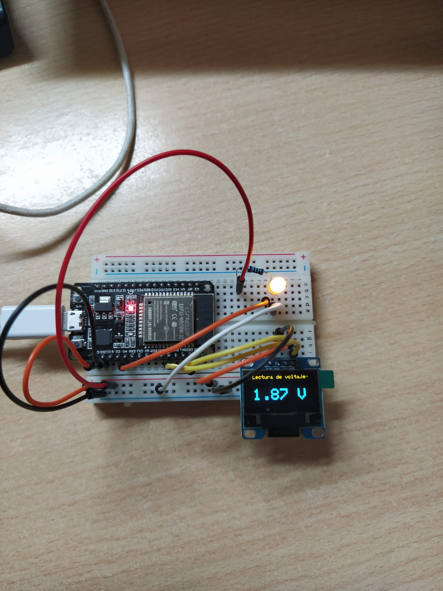
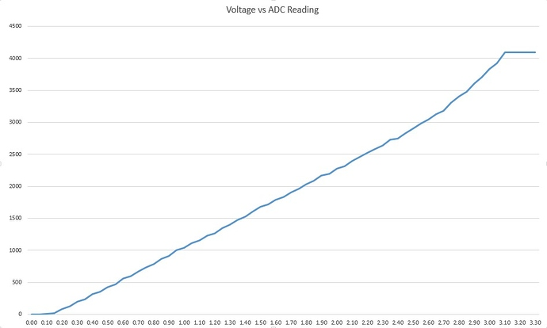
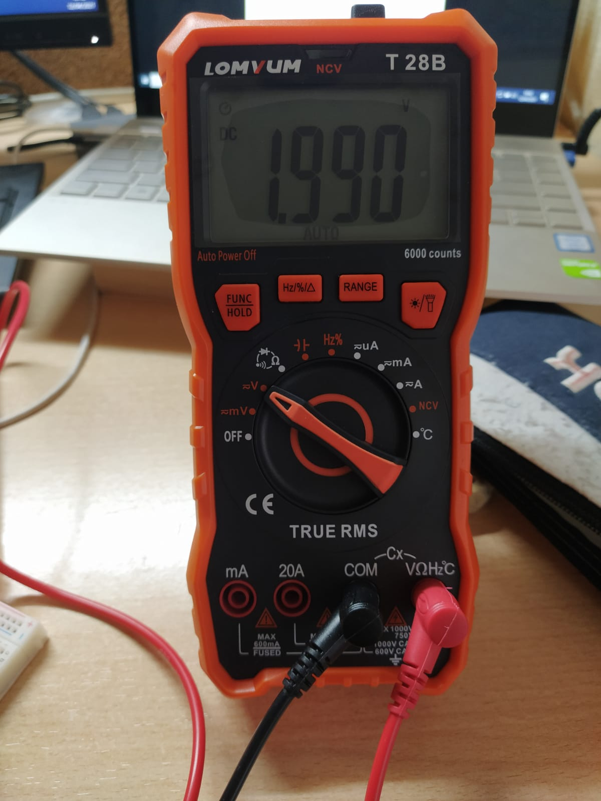

En aquesta practica aprenem a connectar un dispositiu I2C a través de la nostra placa ESP 32.
En la capçelera hi trobem la lliberia Wire que ens permetrà fer la connexió bus I2C. En el setup només s'incicilaitza la coneixó amb el serial port.
#include <Arduino.h>
#include <Wire.h>
void setup(){
Wire.begin();
Serial.begin(9600);
while (!Serial); // Leonardo: wait for serial monitor
Serial.println("\nI2C Scanner");
}
És en el loop on trobem la part important del codi. Primer definim dues variables tipus byte que ens serviràn per guardar l'adreça del dispositiu I2C i el return de la funció wire.endTransmission(). Llavors s'incialitza el contador de dispositius a 0.
void loop(){
byte error, address;
int nDevices;
Serial.println("Scanning...");
nDevices = 0;
Tot seguit entrem en un bucle de 1 a 127 que ens permetrà detectar qualsevol dispositiu I2C. La funció Wire.endTransmission() retorna un byte amb valor de 0 a 4 segons les següents situacions:
Cal esmentar que un cop executat el loop, el dispositiu I2C NO es manté connectat a la micro ja que s'ha realitzat la operació de finalitzar la transmissió.
for(address = 1; address < 127; address++ ){
// The i2c_scanner
// the Write.endTransmisstion to see if
// a device did acknowledge to the address.
Wire.beginTransmission(address);
error = Wire.endTransmission();
if (error == 0)
{
Serial.print("I2C device found at address 0x");
if (address<16)
Serial.print("0");
Serial.print(address,HEX);
Serial.println(" !");
nDevices++;
}
else if (error==4)
{
Serial.print("Unknown error at address 0x");
if (address<16)
Serial.print("0");
Serial.println(address,HEX);
}
}
if (nDevices == 0)
Serial.println("No I2C devices found\n");
else
Serial.println("done\n");
delay(5000); // wait 5 seconds for next scan
}
En cas de connexió correcte la sortida al port serie hauria de ser així (on en lloc d'aparèixer 3C sortiria l'adressa del teu dispositiu I2C):
Scanning...
I2C device found at address 0x3C !
done

En aquest exercici hem fet el muntatge d'un voltímetre digital.
Per a fer-ho hem fet servir part del codi de la Pràctica 1 on obteníem la mesura de tensió des d'un pin ADC i ho hem convinat amb la pantalla gràcies a la connexió de busos I2C.
Aquí definim les dimensions del nostre display i l'inicialitzem. També definim el pin de lectura ADC.
#include <SPI.h>
#include <Wire.h>
#include <Adafruit_GFX.h>
#include <Adafruit_SSD1306.h>
// Definir constantes
#define ANCHO_PANTALLA 128 // ancho pantalla OLED
#define ALTO_PANTALLA 64 // alto pantalla OLED
// Objeto de la clase Adafruit_SSD1306
Adafruit_SSD1306 display(ANCHO_PANTALLA, ALTO_PANTALLA, &Wire, -1);
int IN=4;
Primer de tot inicialitzem la connexió amb el port Serie per tal de saber si s'ha pogut o no inicialitzar la connexió amb la pantalla. Tot seguit s'esborra el contingud de la pantalla.
Per tal de poder escriure-hi s'ha de definir el tamany de text [en pixels] i el color de la lletra (tot i que la pantalla només permet visualitzar uns colors establers, si es prescindeix d'aquesta configuració no es visualitzarà res).
Tot seguit procedim a impirmir al display la informació que volguem, imprimint-la des del punt x,y que volguem amb la funció display.setCursor(x, y).
void setup() {
#ifdef __DEBUG__
Serial.begin(9600);
Serial.println("Iniciando pantalla OLED");
#endif
// Iniciar pantalla OLED en la dirección 0x3C
if (!display.begin(SSD1306_SWITCHCAPVCC, 0x3C)) {
#ifdef __DEBUG__
Serial.println("No se encuentra la pantalla OLED");
#endif
while (true);
}
// Limpiar buffer
display.clearDisplay();
display.setTextSize(1);
display.setCursor(7, 0);
display.setTextColor(SSD1306_WHITE);
display.println("Lectura de voltaje:");
display.setTextColor(SSD1306_WHITE);
display.setCursor(0,20);
display.println("Los datos que se mostraran a continuacion tienen un error de hasta un 10% aproximadamente.");
display.display();
delay(15000);
}
En aquest espai és on es desenvolupa la funcionalitat de voltímetre.
En la variable measure hi guardem el valor de la conversió Analogic-Digital. La ESP 32 converteix el voltatge a un valor de 0 a 4095. La conversió, però, no és 100% lineal :

Per simplificar la reconversió hem estimat que la tendencia és perfectament lineal. Així dons, aconseguim el valor en volts de la seguent manera: volts=measure3.3/4095;* Això provoca que el valor tingui un marge d'error força significatiu.
Les següents linies utilitzen el mètode explicat en el Setup per a mostrar les dades de la lectura del voltatge del LED en el display. Al voltatge s'actualitzarà cada segon.
void loop() {
int measure;
float volts;
measure=analogRead(IN);
Serial.println(measure);
volts=measure*3.3/4095;
display.clearDisplay();
display.setTextSize(1);
display.setTextColor(SSD1306_WHITE);
display.setCursor(7, 0);
display.println("Lectura de tension:");
display.setTextSize(3);
display.setTextColor(SSD1306_WHITE);
display.setCursor(7, 25);
display.print(volts);
display.println(" V");
display.display();
delay(1000);
}
#include <SPI.h>
#include <Wire.h>
#include <Adafruit_GFX.h>
#include <Adafruit_SSD1306.h>
// Definir constantes
#define ANCHO_PANTALLA 128 // ancho pantalla OLED
#define ALTO_PANTALLA 64 // alto pantalla OLED
// Objeto de la clase Adafruit_SSD1306
Adafruit_SSD1306 display(ANCHO_PANTALLA, ALTO_PANTALLA, &Wire, -1);
int IN=4;
void setup() {
#ifdef __DEBUG__
Serial.begin(9600);
delay(100);
Serial.println("Iniciando pantalla OLED");
#endif
// Iniciar pantalla OLED en la dirección 0x3C
if (!display.begin(SSD1306_SWITCHCAPVCC, 0x3C)) {
#ifdef __DEBUG__
Serial.println("No se encuentra la pantalla OLED");
#endif
while (true);
}
// Limpiar buffer
display.clearDisplay();
display.setCursor(7, 0);
display.setTextColor(SSD1306_WHITE);
display.println("Lectura de voltaje:");
display.setTextSize(1);
display.setTextColor(SSD1306_WHITE);
display.setCursor(0,20);
display.println("Los datos que se mostraran a continuacion tienen un error de hasta un 10% aproximadamente.");
display.display();
delay(15000);
}
void loop() {
int measure;
float volts;
measure=analogRead(IN);
Serial.println(measure);
volts=measure*3.3/4095;
display.clearDisplay();
display.setTextSize(1);
display.setTextColor(SSD1306_WHITE);
display.setCursor(7, 0);
display.println("Lectura de tension:");
display.setTextSize(3);
display.setTextColor(SSD1306_WHITE);
display.setCursor(7, 25);
display.print(volts);
display.println(" V");
display.display();
delay(1000);
}
Per tal de veure si el programa y muntatge tenia éxit he decidit comprovar amb un tester el voltatge real del díode LED.
Com es pot observar en la següent imatge, el voltatge obtingut a través d'un aparell de mesura és superior al obtingut a través del nostre muntatge. 
Això ja ho havíem prevut ja que la conversió ADC no és lineal.
Gràcies a aquesta practica he aprés a com controlar un display i adonar-me de que pot ser de gran ajuda en projectes futurs. Crec que es pot ser molt útil per tal de donar un bon acabat a un projecte.
Així doncs podem concolure la pràctica i donar-la com a exitosa.
Podeu trobar tots els arxius .cpp així com imatges i altres en el següent link
https://github.com/PauAnton/Pr5_I2C